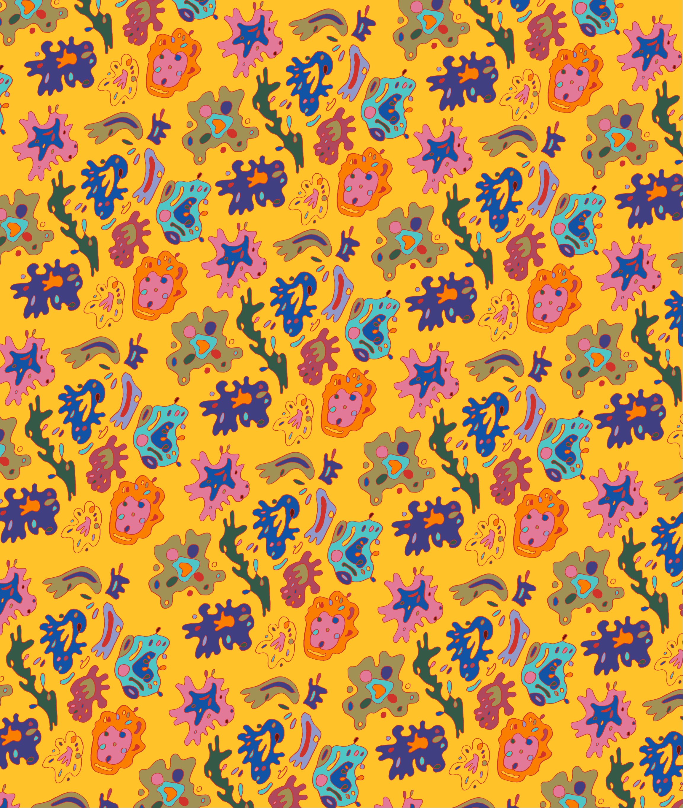

Lazy Susan Sundays
Timeline
February, 2026 (1 month)

Workplace
Freelance
Project Type
Branding / Graphic Design
Overview
This is an ongoing project, but wanted to give a little preview!
I am working with chef, Matt Yee on the identity for his dinner series, Lazy Susan Sundays. Matt cooks farm-to-table food, and experiments with asian flavors. While traveling in Thailand, Matt was inspired by the textile patterns. Using his images for reference, I hand-drew custom patterns for use in this project. I created this character, "Lazy Susan," to embody the feeling of a lazy sunday, where you want to lay around and be fed good food.